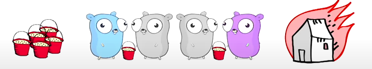
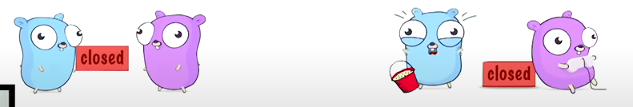
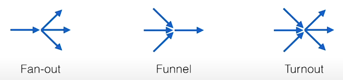

Currency
What is Concurrency? * Concurrency is the composition of independently executing computations. * Concurrency is a way to structure software, particularly as a way to write clean code that interacts well with the real world. * Concurrency is not parallelism. It is about the design. * Parallelism is the property of a system where several computations can execute simultaneously.
Concurrency is not parallelism * Design your program as a collection of independent processes * Design these processes to eventually run in parallel * Design your code so that the outcome is always the same
A semaphore is a variable or abstract data type used to control access to a common resource by multiple threads and avoid critical section problems in a concurrent system such as a multitasking operating system.
Communicating Sequential Processes (CSP)
- Tony Hoare, 1978
- Each process is built for sequential execution
- Data is communicated between processes via channels. No shared state!
- Scale by adding more of the same
Go's Concurrency Toolset
- go routine
- channels
- select
- sync package
Go Routine
- A go routine is a lightweight thread of function or method managed by the Go runtime.
Channels
- Think of a bucket chain
- 3 components: sender, buffer, receiver
- The buffer is optional

Closing channels * Close sends a special "closed" message * The receiver will at some point see "closed". Yay! nothing to do * if you try to send more. panic!

Closing Channels
package somepackage
import "fmt"
func someFunc() {
c := make(chan int)
close(c)
fmt.Println(<-c)
}
// what is printed?
// 0, false
// a receiver always returns two values
// 0 as it is the zero value of int
// false because, "no more data or "returned value is not valid"
// suggest that always close the channel from sending side.
Select
- like a switch statement on channel operations
- The order of cases doesn't matter at all
- There is a default case, too
- The first not-blocking case is chosen (send and/or receive)
package main
import (
"fmt"
"sync"
)
func main() {
var count int
var lock sync.Mutex
increment := func() {
lock.Lock()
defer lock.Unlock()
count++
fmt.Printf("Incrementing: %d\n", count)
}
decrement := func() {
lock.Lock()
defer lock.Unlock()
count--
fmt.Printf("Decrementing: %d\n", count)
}
// Increment
var arithmetic sync.WaitGroup
for i := 0; i <= 5; i++ {
arithmetic.Add(1)
go func() {
defer arithmetic.Done()
increment()
}()
}
// Decrement
for i := 0; i <= 5; i++ {
arithmetic.Add(1)
go func() {
defer arithmetic.Done()
decrement()
}()
}
arithmetic.Wait()
fmt.Println("Arithmetic complete.")
}
Making channels non-blocking
package somepackage
import "time"
func TryReceiveWithTimeout(c <- chan int, duration time.Duration) (data int, more, ok bool) {
select {
case data, more = <-c:
return data, more, true
default: // processed when c is blocking
return 0, true, false
}
}
Shape your data flow
- Channels are streams of data
- Dealing with multiple streams is the true of select

Fan-out
func Fanout(In <- chan int, OutA, OutB chan int) { // Receive until closed
for data := range In {
select: { // Send to the first non-blocking channel
case OutA <- data:
case OutB <- data:
}
}
}
Turnout
package somepackage
func Turnout(InA, InB <- chan int, OutA, OutB chan int) {
// variable declaration left out for readability
var data int
var more bool
for {
select { // Receive from first non-blocking
case data, more = <-InA:
case data, more = <-InB:
}
if !more {
return
}
select { // Send to the first non-blocking
case OutA <-data:
case OutB <-data:
}
}
}
Turnout with Quit
func Turnout(Quit <- chan int, InA, InB <- chan int, OutA, OutB chan int) {
// variable declaration left out for readability
for {
select { // Receive from first non-blocking
case data, more = <-InA:
case data, more = <-InB:
case <- Quit: // remember: close generates a message
close(InA) // Actually this is an anti-pattern
close(inB) // but you can argue that quit acts as a delegate
Fanout(InA, OutA, OutB) // flush the remaining data
Fanout(InB, OutA, OutB)
return
}
}
}
Where Channels Fail
- you can create deadlock with channels
- Channels pass around copies, which can impact performance
- Passing pointers to channels can create race conditions
- What about "naturally shared" structures like caches or registries?
Mutexes are not an optimal solution
- Mutexes are like toilets - the longer you occupy them, the longer the queue gets
- Read/write mutexes can only reduce the problem
- Using multiple mutexes will cause deadlocks sooner or later
- All-in-all not the solution we're looking for
Three shades of code
- Blocking = your program may get locked up (for undefined time)
- Lock free = At least one part of your program is always making progress
- Wait free = All parts of your programs are always making progress
Atomic operations
- sync.atomic package
- Store, Load, Add, Swap and CompareAndSwap
- Mapped to thread-safe CPU instructions
- These instructions only work on integer types
- Only about 10-60x slower than their non-atomic counterparts
Spinning CAS
- you need a state variable and a "free" constant
- use CAS (CompareAndSwap) in a loop:
- if state is not free: try again until it is
- if state is free, set it to something else
- if you managed to change the state, you "own" it
Ticket Storage
- We need to indexed data structure, a ticket and a done variable
- A function draws a new ticket by adding 1 to the ticket
- Evey ticket number is unique as we never decrement
- Treat the ticket as an index to store your data
- Increase done to extend the "ready to read" range
type TicketStore struct {
ticket *uint64
done *uint64
slots []string // for simplicity: imagine this to be infinite
}
func (ts *TicketStore) Put(s string) {
t := atomic.AddUint64(ts.ticket, 1) - 1 // draw a ticket
ts.slots[t] = s // store your data
for !atomic.CompareAndSwapUint64(ts.done, t, t+1) {
runtime.Gosched()
}
}
func (ts *TicketStore) GetDone() []string {
return ts.slots[:atomic.LoadUint64(ts.done) + 1] //read up to done
}
Debugging non-blocking code
- I call it "the instruction pointer game"
- The rules:
- Pull up two windows (= two go routines) with the same code
- you have one instruction pointer that iterates through your code
- You may switch windows at any instruction
- Watch your variables for race conditions
Guidelines for non-blocking code
- Don't switch between atomic and non-atomic functions
- Target and exploit situations which enforce uniqueness
- Avoid changing two things at a time
- Sometimes you can exploit bit operations
- Sometimes intelligent ordering can do the trick
- Sometimes it's just not possible at all
Concurrency in practice
- Avoid blocking, avoid race conditions
- Use channels to avoid shared state. Use select to manage channels
- Where channels don't work:
- Try to use tools from the sync package first
- In simple cases or when really needed: try lockless code
Ticket storage
for-select loop
done channel
Done channel is a channel that is used to signal that a goroutine has completed its work.
package main
import (
"fmt"
"sync"
)
func main() {
var wg sync.WaitGroup
done := make(chan struct{})
for i := 0; i < 3; i++ {
wg.Add(1)
go func(i int) {
defer wg.Done()
fmt.Printf("worker %v: started\n", i)
<-done
fmt.Printf("worker %v: done\n", i)
}(i)
}
wg.Wait()
fmt.Println("all workers done")
}
pipeline
Create a pipeline of functions that operate on data
package main
import "fmt"
func main() {
// input
nums := []int{2, 3, 4, 7, 1}
// stage 1
dataChannel := sliceToChannel(nums)
// stage 2
finalChannel := square(dataChannel)
//stage 3
for n := range finalChannel {
fmt.Printf("result: %v\n", n)
}
}
func sliceToChannel(nums []int) <-chan int {
out := make(chan int)
go func() {
for _, n := range nums {
fmt.Printf("input: %v\n", n)
out <- n
}
close(out)
}()
return out
}
// square
// input: channel
// output: channel
func square(in <-chan int) <-chan int {
out := make(chan int)
go func() {
for n := range in {
out <- n * n
}
close(out)
}()
return out
}